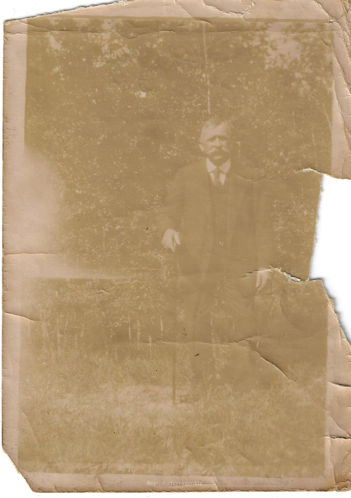
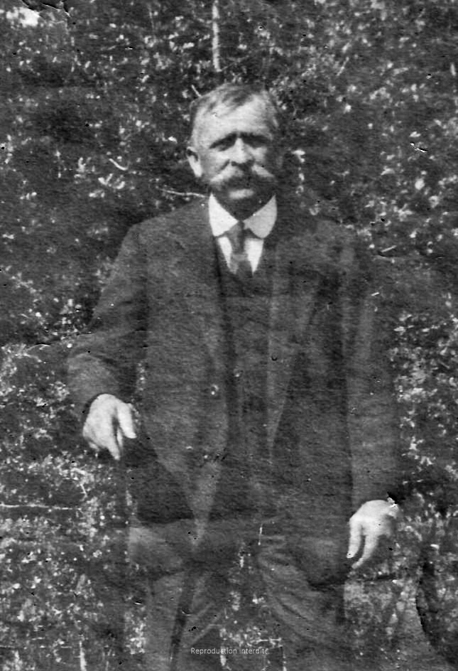
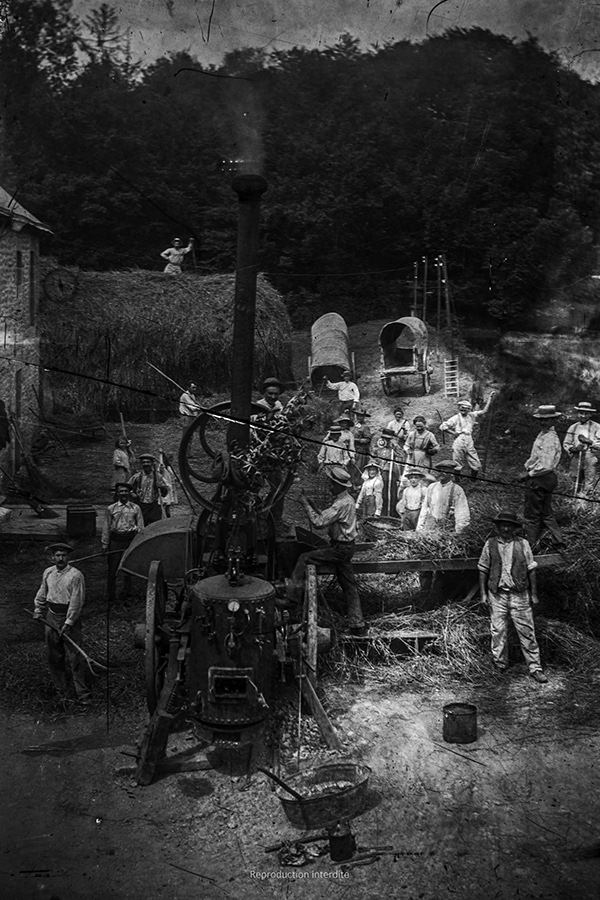
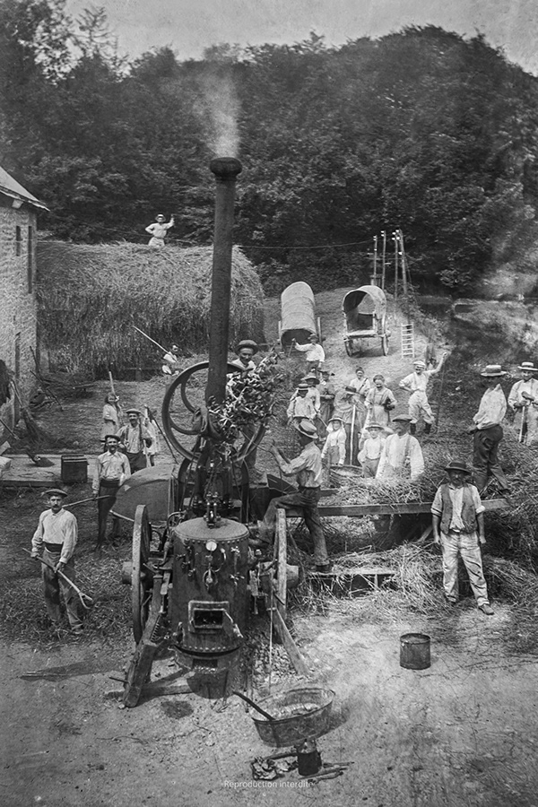

Négatifs souples


Formats variés, émulsions différentes. Numérisation optimisée puis correction progressive.
- Rayures / poussières
- Contraste / densité
- Inversion / équilibre
Prestations
Chaque support demande une approche différente. Voici une vue claire des prestations proposées — pour comprendre rapidement et demander un devis fiable.
Plaque de verre, négatifs (N&B), tirages anciens sur papier, diapositives
Formats variés, émulsions différentes. Numérisation optimisée puis correction progressive.


Quand les négatifs sont absents, le tirage devient la source. Amélioration prudente et fidèle.


Supports fragiles (cassés, altérés). Numérisation HD + restauration des défauts visibles.


Supports couleur sensibles (poussières, traces, moisissures possibles). Capture HD puis corrections ciblées.
Quelques situations où une restauration photo ancienne change tout.
Préparer un album, une généalogie, une biographie, une impression, un partage numérique propre et durable.
Rassembler et préserver les souvenirs avant qu’ils ne se dégradent davantage.
Numériser des documents anciens (séries, collections) pour les transmettre.